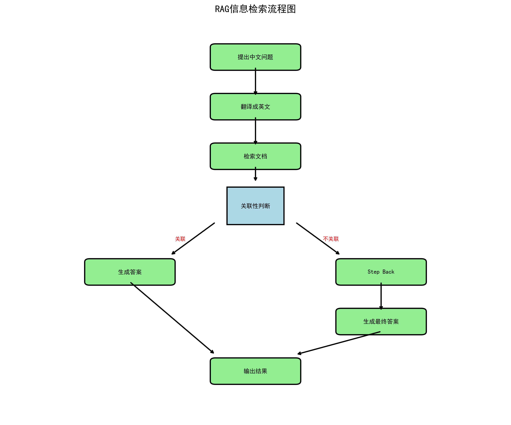

简介
最近学习了用Langchain构建RAG（检索增强生成）信息检索链，这是目前业界主流的知识问答框架。通过实践发现这个框架功能强大且灵活，于是基于rag from scratch课程构建了一个巴萨球员知识库。
值得注意的是，尽管当前AI在网页生成、后端开发等领域表现出色，但对于RAG系统的端到端代码生成，现有AI工具仍难以准确完成。这表明RAG领域的技术复杂性和专业性仍然需要人工深度参与，为开发者提供了独特的技术价值空间。
主要流程

导入数据
用pandas这个库导入数据，得到结果如下
| Name | Description | Position | Record |
|---|---|---|---|
| marc-andre-ter-stegen | ViewMarc-André ter Stegen signed for FC Barcelona… | goalkeeper | 422 apps / 174 CS / 986 saves |
| inaki-pena | ViewIñaki Peña signed for Alicante CF when he was… | goalkeeper | 45 apps / 10 CS / 90 saves |
| wojciech-szczesny | ViewFC Barcelona and the player Wojciech Szczęsny… | goalkeeper | 30 apps / 14 CS / 66 saves |
| ronald-federico-araujo-da-silva | ViewRonald Araujo was born in Rivera, Uruguay… | defender | 175 apps / 10 G / 7 A |
| jules-kounde | ViewJules Kounde was born in Paris on November 12… | defender | 141 apps / 7 G / 18 A |
| pau-cubarsi | ViewPau Cubarsí arrived at La Masia from Girona… | defender | 80 apps / 1 G / 5 A |
| alejandro-balde | ViewAlejandro Balde, born in Barcelona to Guinean… | defender | 126 apps / 3 G / 15 A |
| inigo-martinez-berridi | ViewBorn in Ondarroa on 17 May 1991, a town in… | defender | 71 apps / 3 G / 5 A |
| eric-garcia | ViewA player of massive potential, he is the class… | defender | 114 apps / 6 G / 5 A |
| gavi | ViewA combative and technically gifted midfielder… | midfielder | 153 apps / 10 G / 14 A |
| Pedri | ViewOn September 2, 2019, FC Barcelona and Las Pal… | midfielder | 202 apps / 26 G / 21 A |
| Pablo Torre | ViewIn March of 2022 Barça reached an agreement… | midfielder | 27 apps / 5 G / 4 A |
| fermin-lopez | ViewFermín López Marín was part of the Campillo… | midfielder | 88 apps / 19 G / 9 A |
| marc-casado | ViewBorn in Sant Pere de Vilamajor in 2003 and… | midfielder | 41 apps / 1 G / 6 A |
| dani-olmo | ViewAn attack minded forward who can play anywhere… | midfielder | 39 apps / 12 G / 6 A |
| de-jong | ViewFrenkie de Jong was born in Arkel (Netherlands… | midfielder | 259 apps / 19 G / 21 A |
| ferran-torres | ViewBorn on 29 February 2000 in Foios (Valencia)… | forward | 158 apps / 44 G / 19 A |
| robert-lewandowski | ViewThe striker from Poland stands out for his goa… | forward | 147 apps / 101 G / 20 A |
| ansu-fati | ViewAnssumane Fati (31 October 2002) was born in… | forward | 123 apps / 29 G / 6 A |
| raphael-dias-belloli-raphinha | ViewA technically proficient winger, with good dri… | forward | 144 apps / 54 G / 45 A |
| pau-victor | ViewA versatile forward who can play as a striker… | forward | 29 apps / 2 G / 1 A |
| lamine-yamal | ViewLamine Yamal arrived at FC Barcelona at the ag… | forward | 106 apps / 25 G / 28 A |
| Leo Messi | ViewMessi (Rosario, Argentina, 24 June 1987) is th… | forward | 778 apps / 672 G / 269 A |
| xavi-hernandez | ViewIf Barça is more than a club, then Xavi Hernán… | midfielder | 767 apps / 87 G / 184 A |
| andres-iniesta | ViewIniesta (Fuentealbilla, Albacete, 1984) was on… | midfielder | 674 apps / 57 G / 139 A |
| ronaldinho | ViewWith his trademark goal celebration and broad… | forward | 207 apps / 94 G / 69 A |
| sergio-busquets | ViewSergio Busquets (Sabadell, 16 July 1988), from… | Midfielder | 722 apps / 18 G / 45 A |
| david-villa | ViewDavid Villa (Tuilla, Asturias, 1981) came to B… | forward | 130 apps / 51 G / 24 A |
| pedro-rodriguez | ViewPedro Rodríguez (Santa Cruz de Tenerife)… | forward | 358 apps / 109 G / 62 A |
| Daniel Alves | ViewDani Alves (Juazeiro, Brazil, 1983) is conside… | defender | 431 apps / 24 G |
| luis-suarez | ViewSuárez, (Salto, Uruguay, 1987) was one of the… | forward | 300 apps / 210 G |
| Samuel Eto’o | ViewEto’o (Nkon, Cameroon, 1981) goes down in Bar… | forward | 234 apps / 152 G |
我直接找的官网的数据，所以没有翻译成中文，就是每个球员在巴萨的生涯数据，包括出场次数，进球，助攻。
加载嵌入模型
def get_embedding_model(embed_model):
from langchain.embeddings import HuggingFaceEmbeddings
embeddings = HuggingFaceEmbeddings(model_name=embed_model)
return embeddings
embed_model = 'Qwen/Qwen3-Embedding-0.6B'
embeddings = get_embedding_model(embed_model)
embeddings
获取向量数据库
这里采用chroma作为向量数据库
from langchain.schema import Document
docs=[Document(page_content=row['description']+'\n'+row['record']) for index, row in merged_df.iterrows()]
from langchain.text_splitter import RecursiveCharacterTextSplitter
def get_text_splitter(chunk_size=500, chunk_overlap=100):
text_splitter = RecursiveCharacterTextSplitter(
chunk_size=chunk_size,
chunk_overlap=chunk_overlap,
)
return text_splitter
text_splitter = get_text_splitter()
split_docs = text_splitter.split_documents(docs)
from langchain_community.vectorstores import Chroma
def get_vector_store(embeddings, split_docs):
vector_store = Chroma.from_documents(
documents=split_docs,
embedding=embeddings,
)
return vector_store
vector_store = get_vector_store(embeddings, split_docs)
获取retriever
retriever = vector_store.as_retriever()
上面代码大致意思是指，将文档分割成一个个chunks，每个chunks大小为500字，然后把这些chunks存放到向量数据库中
定义llm
这里的llm指的是对话模型，而前面加载的是文本嵌入模型
llm模型可以选择本地模型或者在线模型
本地模型:这里的本地模型部署在ollama上
def get_ollama_llm(self, base_url, model_name): # 添加self
from langchain_ollama import ChatOllama
llm=ChatOllama(base_url=base_url, model=model_name, temperature=0.0)
return llm
在线模型：可选择GPT或者deepseek等
def get_online_llm(self, base_url, model_name): # 添加self
from langchain_openai import ChatOpenAI
llm=ChatOpenAI(base_url=base_url, model=model_name, api_key="<your_api_key>", temperature=0.0)
return llm
构建langgraph
LangGraph 是 LangChain 推出的工作流编排框架，专门用于构建多步骤的AI应用。它以图的形式管理复杂的推理流程，支持条件分支、循环和状态管理，特别适合构建需要多轮交互的智能代理系统。
我们根据流程图来构建自己的pipeline
中译英
chinese_to_english_prompt = "You are a translation expert. If the question is in Chinese, translate it into English concisely. Use the above statement as the prompt.question:{question}"
def translate_to_english(state):
from langchain_core.prompts import ChatPromptTemplate
from langchain_core.output_parsers import StrOutputParser
translate_chain=ChatPromptTemplate.from_template(chinese_to_english_prompt) | llm | StrOutputParser()
translated_question=translate_chain.invoke({"question": state['question']})
return {"question": translated_question}
💡 这里要重点介绍LCEL（LangChain Expression Language）链式语法，这是LangChain库最核心的设计理念之一。当上一个组件的输出格式恰好匹配下一个组件的输入格式时，就可以用 | 符号将它们无缝连接起来，形成优雅的数据流管道。这种链式调用不仅让代码更加简洁易读，也体现了LangChain在组件设计上的精妙之处。
prompt | llm
这句话等同于
input_data={"question":'...',"context":'...'}
prompt_output=prompt.invoke(input_data)
llm_output=llm.invoke(prompt_output)
检索
def retrieve(self,state):
query = state['question']
retrieved_docs = self.retriever.get_relevant_documents(query)
return {"question":state['question'], "context": retrieved_docs}
检查问题与检索的文章是否关联
class GradeDocuments(BaseModel):
is_relevant: str=Field(description="Documents are relevant to the question, 'yes' or 'no'")
def get_grade_chain():
from langchain_core.prompts import ChatPromptTemplate
system = """You are a grader assessing relevance of a retrieved document to a user question. \n
If the document contains keyword(s) or semantic meaning related to the question, grade it as relevant. \n
Give a binary score 'yes' or 'no' score to indicate whether the document is relevant to the question."""
grade_prompt = ChatPromptTemplate.from_messages(
[
("system", system),
("human", "Retrieved document: \n\n {context} \n\n User question: {question}"),
]
)
structured_llm_grader=llm.with_structured_output(GradeDocuments)
return grade_prompt | structured_llm_grader
def grade_documents(state): # 添加self
print("---CHECK DOCUMENT RELEVANCE TO QUESTION---")
question = state["question"]
context = state["context"]
# Score each doc
score = grade_chain.invoke(
{"question": question, "context": context}
)
is_relevant="No"
if score.is_relevant == "yes":
print("---GRADE: DOCUMENT RELEVANT---")
is_relevant = "Yes"
else:
print("---GRADE: DOCUMENT NOT RELEVANT---")
return {"context": context, "question": question, "is_relevant": is_relevant}
如果关联，那么is_relevant=yes，否则就会为no
with_structured_output 方法可以将模型生成的结果，转换成一个对象